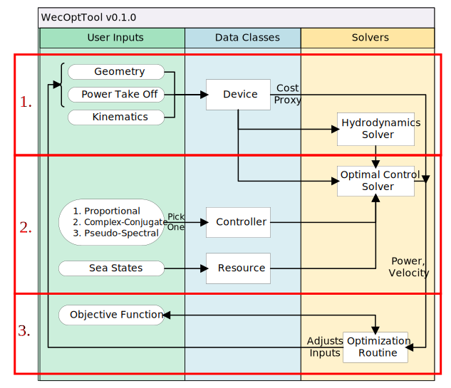

3. WEC Model Architecture¶
This section provides an overview of how a typical WecOptTool model is programmed. WecOptTool is currently structured as a set of examples, all of which follow a similar format and can thus rely on common utilities. It is envisioned that the structure of WecOptTool may some day be consolidated based on experience in developing these examples.
3.1. Introduction¶
The WaveBot example [3] will be used to illustrate these concepts in more detail. The process for performing a study in WecOptTool can be broken into three distinct steps, which correlate to three files in the WaveBot example:
- Designing the device -
designDevice.mcreates the device based on a set of design variables- Simulating device response -
simulateDevice.msimulates device performance- Reporting results -
Performance.ma class for storing and plotting performance data
The diagram below shows the responsibilities that each of these steps take within the context of the overall work-flow. The Designing the device step takes user inputs regarding the configuration of the device and calculates the hydrodynamic parameters of that design. In the diagram below, the processes bounded by rectangle 1 are encapsulated by this step. Simulating device response takes information about the sea state and controller type, and finds the optimal power output for the given hydrodynamic parameters, encapsulating the processes in rectangle 2. Finally, the processes in rectangle 3 will use metrics that are calculated in the Reporting results step, e.g., to find the average power.
3.2. Designing the device¶
See the entire file
1 2 3 4 5 6 7 8 9 10 11 12 13 14 15 16 17 18 19 20 21 22 23 24 25 26 27 28 29 30 31 32 33 34 35 36 37 38 39 40 41 42 43 44 45 46 47 48 49 50 51 52 53 54 55 56 57 58 59 60 61 62 63 64 65 66 67 68 69 70 71 72 73 74 75 76 77 78 79 80 81 82 83 84 85 86 87 88 89 90 91 92 93 94 95 96 | function hydro = designDevice(type, varargin)
% WaveBot WEC based on the Sandia "WaveBot" device.
%
% The WaveBot is a model-scale wave energy converter (WEC) tested in
% the Navy's Manuevering and Sea Keeping (MASK) basin. Reports and
% papers about the WaveBot are available at advweccntrls.sandia.gov.
switch type
case 'existing'
hydro = WecOptTool.geometry.existingNEMOH(varargin{:});
case 'scalar'
hydro = getHydroScalar(varargin{:});
case 'parametric'
hydro = getHydroParametric(varargin{:});
otherwise
error('WecOptTool:UnknownGeometryType',...
'Invalid geometry type')
end
end
function hydro = getHydroScalar(folder, lambda, w)
if w(1) == 0
error('WecOptTool:UnknownGeometryType',...
'Invalid frequency vector') % TODO - more checks
end
r = lambda * [0, 0.88, 0.88, 0.35, 0];
z = lambda * [0.2, 0.2, -0.16, -0.53, -0.53];
% Mesh
ntheta = 20;
nfobj = 200;
zG = 0;
meshes = WecOptTool.mesh("AxiMesh", ...
folder, ...
r, ...
z, ...
ntheta, ...
nfobj, ...
zG, ...
1);
hydro = WecOptTool.solver("NEMOH", folder, meshes, w);
end
function hydro = getHydroParametric(folder, r1, r2, d1, d2, w)
if w(1) == 0
w = w(2:end);
end
r = [0, r1, r1, r2, 0];
z = [0.2, 0.2, -d1, -d2, -d2];
% Mesh
ntheta = 20;
nfobj = 200;
zG = 0;
meshes = WecOptTool.mesh("AxiMesh", ...
folder, ...
r, ...
z, ...
ntheta, ...
nfobj, ...
zG, ...
1);
hydro = WecOptTool.solver("NEMOH", folder, meshes, w);
end
% Copyright 2020 National Technology & Engineering Solutions of Sandia,
% LLC (NTESS). Under the terms of Contract DE-NA0003525 with NTESS, the
% U.S. Government retains certain rights in this software.
%
% This file is part of WecOptTool.
%
% WecOptTool is free software: you can redistribute it and/or modify
% it under the terms of the GNU General Public License as published by
% the Free Software Foundation, either version 3 of the License, or
% (at your option) any later version.
%
% WecOptTool is distributed in the hope that it will be useful,
% but WITHOUT ANY WARRANTY; without even the implied warranty of
% MERCHANTABILITY or FITNESS FOR A PARTICULAR PURPOSE. See the
% GNU General Public License for more details.
%
% You should have received a copy of the GNU General Public License
% along with WecOptTool. If not, see <https://www.gnu.org/licenses/>.
|
The Designing the device step codifies the user inputs for the Geometry, Power take off, and Kinematics of the WEC.
With some important caveats, this step can be seen as analogous to building the physical device.
This step can include [1] generating a panelized representation of the WEC’s hull and calling a BEM code (e.g., NEMOH) to estimate the hydrodynamic coefficients.
We can see from the signature of designDevice.m that it will return a Hydrodynamics object.
hydro = designDevice(type, varargin)
3.3. Simulating device response¶
See the entire file
1 2 3 4 5 6 7 8 9 10 11 12 13 14 15 16 17 18 19 20 21 22 23 24 25 26 27 28 29 30 31 32 33 34 35 36 37 38 39 40 41 42 43 44 45 46 47 48 49 50 51 52 53 54 55 56 57 58 59 60 61 62 63 64 65 66 67 68 69 70 71 72 73 74 75 76 77 78 79 80 81 82 83 84 85 86 87 88 89 90 91 92 93 94 95 96 97 98 99 100 101 102 103 104 105 106 107 108 109 110 111 112 113 114 115 116 117 118 119 120 121 122 123 124 125 126 127 128 129 130 131 132 133 134 135 136 137 138 139 140 141 142 143 144 145 146 147 148 149 150 151 152 153 154 155 156 157 158 159 160 161 162 163 164 165 166 167 168 169 170 171 172 173 174 175 176 177 178 179 180 181 182 183 184 185 186 187 188 189 190 191 192 193 194 195 196 197 198 199 200 201 202 203 204 205 206 207 208 209 210 211 212 213 214 215 216 217 218 219 220 221 222 223 224 225 226 227 228 229 230 231 232 233 234 235 236 237 238 239 240 241 242 243 244 245 246 247 248 249 250 251 252 253 254 255 256 257 258 259 260 261 262 263 264 265 266 267 268 269 270 271 272 273 274 275 276 277 278 279 280 281 282 283 284 285 286 287 288 289 290 291 292 293 294 295 296 297 298 299 300 301 302 303 304 305 306 307 308 309 310 311 312 313 314 315 316 317 318 319 320 321 322 323 324 325 326 327 328 329 330 331 332 333 334 335 336 337 338 339 340 341 342 343 344 345 346 347 348 349 350 351 352 353 354 355 356 357 358 359 360 361 362 363 364 365 366 367 368 369 370 371 372 373 374 375 376 377 378 379 380 381 382 383 384 385 386 387 388 389 390 391 392 393 394 395 396 397 398 399 400 401 402 403 404 405 406 407 408 409 410 411 412 413 414 415 416 417 418 419 420 421 422 423 424 425 426 427 428 429 430 431 432 433 434 435 436 437 438 439 440 441 442 443 444 445 446 447 448 449 450 451 452 453 454 455 456 457 458 459 460 461 462 463 464 465 466 467 468 469 470 471 472 473 474 | function performance = simulateDevice(hydro, seastate, controlType, options)
% simulateDevice WEC based on the Sandia "WaveBot" device.
%
% The WaveBot is a model-scale wave energy converter (WEC) tested in
% the Navy's Manuevering and Sea Keeping (MASK) basin. Reports and
% papers about the WaveBot are available at advweccntrls.sandia.gov.
%
% Arguments:
% hydro structure containing BEM results
% seastate sea state object
% controlType controller type:
% complex conjugate: 'CC'
% proportional damping: 'P'
% pseudo-spectral: 'PS'
% name-value pairs
% interpMethod (optional) method to use for linear interpolation
% Zmax (only valid for controlType == 'controlType') maximum
% displacement
% Fmax (only valid for controlType == 'controlType') maximum
% PTO force
%
% See also WecOptTool.SeaState, interp1
arguments
hydro (1,1) WecOptTool.Hydrodynamics
seastate (1,:) WecOptTool.SeaState
controlType (1,1) string
options.Zmax (1,:) double = Inf % TODO - can be assymetric, need to check throughout
options.Fmax (1,:) double = Inf
options.interpMethod (1,1) string = 'linear'
end
dynModel = getDynamicsModel(hydro, seastate,...
options.interpMethod);
switch controlType
case 'CC'
performance = complexCongugateControl(dynModel);
case 'P'
performance = dampingControl(dynModel);
case 'PS'
performance = psControl(dynModel,options.Zmax, options.Fmax);
end
end
function dynModel = getDynamicsModel(hydro, SS, interpMethod)
% Mass
mass = hydro.Vo * hydro.rho;
% Restoring
K = hydro.C(3,3) * hydro.g * hydro.rho;
function result = interp_mass(hydro, dof1, dof2, w)
result = interp1(hydro.w, ...
squeeze(hydro.A(dof1, dof2, :)), ...
w, ...
interpMethod, ...
0);
end
function result = interp_rad(hydro, dof1, dof2, w)
result = interp1(hydro.w, ...
squeeze(hydro.B(dof1, dof2, :)), ...
w, ...
interpMethod, ...
0);
end
function result = interp_ex(hydro, dof, w)
h = squeeze(hydro.ex(dof, 1, :));
result = interp1(hydro.w, h ,w, interpMethod, 0);
end
w = hydro.w(:);
dw = w(2) - w(1);
% Calculate wave amplitude
waveAmpSS = SS.getAmplitudeSpectrum();
waveAmp = interp1(SS.w, waveAmpSS, w, interpMethod, 'extrap');
% Row vector of random phases
ph = rand(size(waveAmp)) * 2 * pi;
% Wave height in frequency domain
eta_fd = waveAmp .* exp(1i * ph);
eta_fd = eta_fd(:);
% radiation damping FRF
B = interp_rad(hydro, 3, 3, w) * hydro.rho .* w;
% added mass FRF
A = interp_mass(hydro, 3, 3, w) * hydro.rho;
% friction
Bf = max(B) * 0.1; % TODO - make this adjustable
% intrinsic impedance
Zi = B + Bf + 1i * (w .* (mass + A) - K ./ w);
% Excitation Forces
Hex = interp_ex(hydro, 3, w) * hydro.g * hydro.rho;
F0 = Hex .* eta_fd;
dynModel.mass = mass;
dynModel.K = K;
dynModel.w = w;
dynModel.eta_fd = eta_fd;
dynModel.dw = dw;
dynModel.wave_amp = waveAmp;
dynModel.ph = ph;
dynModel.B = B;
dynModel.A = A;
dynModel.Bf = Bf;
dynModel.Zi = Zi;
dynModel.Hex = Hex;
dynModel.F0 = F0;
end
function myPerf = complexCongugateControl(dynModel,~)
myPerf = Performance();
myPerf.Zpto = conj(dynModel.Zi);
% velocity
myPerf.u = dynModel.F0 ./ (myPerf.Zpto + dynModel.Zi);
% position
myPerf.pos = myPerf.u ./ (1i * dynModel.w);
% PTO force
myPerf.Fpto = -1 * myPerf.Zpto .* myPerf.u;
% power
myPerf.pow = 0.5 * myPerf.Fpto .* conj(myPerf.u);
myPerf.ph = dynModel.ph;
myPerf.w = dynModel.w;
myPerf.eta = dynModel.eta_fd;
myPerf.F0 = dynModel.F0;
end
function myPerf = dampingControl(dynModel,~)
myPerf = Performance();
P_max = @(b) -0.5*b*sum(abs(dynModel.F0 ./ ...
(dynModel.Zi + b)).^2);
% Solve for damping to produce most power (can do analytically for a
% single frequency, but must use numerical solution for spectrum). Note
% that fval is the sum of power absorbed (negative being "good") - the
% following should be true: -1 * fval = sum(pow), where pow is the
% frequency dependent array calculated below.
[B_opt, ~] = fminsearch(P_max, max(real(dynModel.Zi)));
% PTO impedance
myPerf.Zpto = complex(B_opt * ones(size(dynModel.Zi)),0);
% velocity
myPerf.u = dynModel.F0 ./ (myPerf.Zpto + dynModel.Zi);
% position
myPerf.pos = myPerf.u ./ (1i * dynModel.w);
% PTO force
myPerf.Fpto = -1 * myPerf.Zpto .* myPerf.u;
% power
myPerf.pow = 0.5 * myPerf.Fpto .* conj(myPerf.u);
myPerf.ph = dynModel.ph;
myPerf.w = dynModel.w;
myPerf.eta = dynModel.eta_fd;
myPerf.F0 = dynModel.F0;
end
function myPerf = psControl(dynModel,delta_Zmax,delta_Fmax)
% motion = getPSCoefficients(motion, delta_Zmax, delta_Fmax);
% ps.wave_amp = waveAmp; % TODO
%
% % Use mutliple phase realizations for PS at the model
% % is nonlinear (note that we use the original phasing
% % from the other cases)
% n_ph = 5;
% ph_mat = [ph, rand(length(ps.w), n_ph-1)];
%
% n_freqs = length(motion.w);
% phasePowMat = zeros(n_ph, 1);
% powPerFreqMat = zeros(n_freqs, n_ph);
%
% for ind_ph = 1 : n_ph
%
% ph = ph_mat(:, ind_ph);
% % [powTot, fRes(ind_ph), tRes(ind_ph)] = getPSPhasePower(ps, ph);
% [pow, powPerFreq] = getPSPhasePower(motion, ph)
% phasePowMat(ind_ph) = powTot;
% powPerFreqMat(:, ind_ph) = fRes(ind_ph).pow;
%
% end
%
% ph = ph_mat(:,1);
% u = fRes(1).vel;
% pos = fRes(1).pos;
% Zpto = nan(size(motion.hydro.Zi)); % TODO
% Fpto = fRes(1).u;
% pow = powPerFreqMat(:,1);
arguments
dynModel (1, 1) struct
delta_Zmax (1,:) double {mustBeFinite,mustBeReal,mustBePositive}
delta_Fmax (1,:) double {mustBeFinite,mustBeReal,mustBePositive}
end
% Fix random seed <- Do we want this???
rng(1);
% Reformulate equations of motion
dynModel = getPSCoefficients(dynModel, delta_Zmax, delta_Fmax);
% Add phase realizations
n_ph = 5;
ph_mat = [dynModel.ph, rand(length(dynModel.w), n_ph-1) * 2 * pi];
for ind_ph = 1 : n_ph
ph = ph_mat(:, ind_ph);
[phasePowMat(ind_ph), fRes(ind_ph), tRes(ind_ph)] = ...
getPSPhasePower(dynModel, ph);
pos(:, ind_ph) = fRes(ind_ph).pos;
u(:, ind_ph) = fRes(ind_ph).vel;
Zpto(:, ind_ph) = fRes(ind_ph).Zpto;
Fpto(:, ind_ph) = fRes(ind_ph).u;
pow(:, ind_ph) = fRes(ind_ph).pow;
eta(:, ind_ph) = fRes(ind_ph).eta;
F0(:, ind_ph) = fRes(ind_ph).F0;
end
% assemble results
myPerf = Performance();
myPerf.w = dynModel.w;
myPerf.eta = eta;
myPerf.F0 = F0;
myPerf.ph = ph_mat;
myPerf.u = u;
myPerf.pos = pos;
myPerf.Zpto = Zpto;
myPerf.Fpto = Fpto;
myPerf.pow = pow;
end
function dynModel = getPSCoefficients(dynModel, delta_Zmax, delta_Fmax)
% getPSCoefficients constructs the necessary coefficients and
% matrices used in the pseudospectral control optimization
% problem
%
% Note that these coefficients are not sea state dependent,
% thus it is beneficial to find them once only when doing a
% study involving multiple sea states.
%
% Bacelli 2014: Background Chapter 4.1, 4.2; RM3 in section 6.1
% Number of frequency - half the number of Fourier coefficients
Nf = length(dynModel.w);
% Collocation points uniformly distributed between 0 and T
% note that we have 2*Nf collocation points since we will have
% two Fourier coefficients for each frequency
Nc = (2*Nf) + 2;
% Rebuild frequency vector to ensure monotonically increasing
% with w(1) = w0
w0 = dynModel.dw; % fundamental frequency
T = 2 * pi/w0; % '' period
% Building cost function component
% we will form the cost function as transpose(x) * H x, where x
% is a vector of [vel, u]; we want the product above to result
% in power (u*vel)
H = [0,1;1,0];
H_mat = 0.5 * kron(H, eye(2*Nf));
% Building matrices B33 and A33
Adiag33 = zeros(2*Nf-1,1);
Bdiag33 = zeros(2*Nf,1);
Adiag33(1:2:end) = dynModel.w.* dynModel.A;
Bdiag33(1:2:end) = dynModel.B;
Bdiag33(2:2:end) = Bdiag33(1:2:end);
Bmat = diag(Bdiag33);
Amat = diag(Adiag33,1);
Amat = Amat - Amat';
G = Amat + Bmat;
B = dynModel.Bf * eye(2*Nf);
C = blkdiag(dynModel.K * eye(2*Nf));
M = blkdiag(dynModel.mass * eye(2*Nf));
% Building derivative matrix
d = [dynModel.w(:)'; zeros(1, length(dynModel.w))];
Dphi1 = diag(d(1:end-1), 1);
Dphi1 = (Dphi1 - Dphi1');
Dphi = blkdiag(Dphi1);
% scaling factor to improve optimization performance
m_scale = dynModel.mass;
% equality constraints for EOM
P = (M*Dphi + B + G + (C / Dphi)) / m_scale;
Aeq = [P, -eye(2*Nf) ];
Aeq = [Aeq, zeros(2*Nf,2);
zeros(1,4*Nf), dynModel.K / m_scale, -1];
% Calculating collocation points for constraints
tkp = linspace(0, T, 4*(Nc));
tkp = tkp(1:end);
Wtkp = dynModel.w*tkp;
Phip1 = zeros(2*size(Wtkp,1),size(Wtkp,2));
Phip1(1:2:end,:) = cos(Wtkp);
Phip1(2:2:end,:) = sin(Wtkp);
Phip = blkdiag(Phip1);
A_ineq = [kron([1 0], Phip1' / Dphi1), ones(4*Nc,1), zeros(4*Nc,1)];
A_ineq = [A_ineq; -A_ineq];
% position constraints
if length(delta_Zmax)==1
B_ineq = [ones(size(A_ineq, 1),1) * delta_Zmax];
else
B_ineq = [ones(size(A_ineq, 1)/2,1) * max(delta_Zmax);
-ones(size(A_ineq, 1)/2,1) * min(delta_Zmax)];
end
% force constraints
siz = size(A_ineq);
forc = [kron([0 1], Phip'), zeros(4*Nc,1), ones(4*Nc,1)];
if length(delta_Fmax)==1
B_ineq = [B_ineq; ones(siz(1),1) * delta_Fmax/m_scale];
else
B_ineq = [B_ineq; ones(siz(1)/2,1) * max(delta_Fmax)/m_scale;
-ones(siz(1)/2,1) * min(delta_Fmax)/m_scale];
end
A_ineq = [A_ineq; forc; -forc];
dynModel.Nf = Nf;
dynModel.T = T;
dynModel.H_mat = H_mat;
dynModel.tkp = tkp;
dynModel.Aeq = Aeq;
dynModel.A_ineq = A_ineq;
dynModel.B_ineq = B_ineq;
dynModel.Phip = Phip;
dynModel.Phip1 = Phip1;
dynModel.Dphi = Dphi;
dynModel.mass_scale = m_scale;
end
function [powTot, fRes, tRes] = getPSPhasePower(dynModel, ph)
% getPSPhasePower calculates power using the pseudospectral
% method given a phase and a descrption of the body movement.
% Returns total phase power and power per frequency
eta_fd = dynModel.wave_amp .* exp(1i*ph);
E3 = dynModel.Hex .* eta_fd;
fef3 = zeros(2*dynModel.Nf,1);
fef3(1:2:end) = real(E3);
fef3(2:2:end) = -imag(E3);
Beq = [fef3; 0] / dynModel.mass_scale;
% constrained optimization settings
qp_options = optimoptions('fmincon', ...
'Algorithm', 'sqp', ...
'Display', 'off', ...
'MaxIterations', 1e3, ...
'MaxFunctionEvaluations', 1e5, ...
'OptimalityTolerance', 1e-8, ...
'StepTolerance', 1e-8);
siz = size(dynModel.A_ineq);
X0 = zeros(siz(2),1);
[y, fval, exitflag, output] = fmincon(@pow_calc,...
X0,...
dynModel.A_ineq,...
dynModel.B_ineq,...
dynModel.Aeq,... % Aeq and Beq are the hydrodynamic model
Beq,...
[], [], [],...
qp_options);
% if exitflag ~= 1 % for debugging
% disp(exitflag)
% disp(output)
% end
% y is a column vector containing [vel; u] of the
% pseudospectral coefficients
tmp = reshape(y(1:end-2),[],2);
x1hat = tmp(:,1);
uhat = tmp(:,2);
% find the spectra
ps2spec = @(x) (x(1:2:end) - 1i * x(2:2:end)); % TODO - probably make this a global function
velFreq = ps2spec(x1hat);
posFreq = velFreq ./ (1i * dynModel.w);
uFreq = dynModel.mass_scale * ps2spec(uhat);
powFreq = 1/2 * uFreq .* conj(velFreq);
zFreq = uFreq ./ velFreq;
% find time histories
spec2time = @(x) dynModel.Phip' * x; % TODO - probably make this a global function
velT = spec2time(x1hat);
posT = y(end-1) + (dynModel.Phip' / dynModel.Dphi) * x1hat;
uT = dynModel.mass_scale * (y(end) + spec2time(uhat));
powT = 1 * velT .* uT;
powTot = trapz(dynModel.tkp, powT) / (dynModel.tkp(end) - dynModel.tkp(1));
assert(WecOptTool.math.isClose(powTot, sum(real(powFreq)),...
'rtol', eps*1e2),...
sprintf('Mismatch in PS results\n\tpowTot: %.3e\n\tpowFreq: %.3e',...
powTot,sum(real(powFreq))))
% assemble outputs
fRes.pos = posFreq;
fRes.vel = velFreq;
fRes.u = uFreq;
fRes.pow = powFreq;
fRes.Zpto = zFreq;
fRes.eta = eta_fd;
fRes.F0 = E3;
tRes.pos = posT;
tRes.vel = velT;
tRes.u = uT;
tRes.pow = powT;
function P = pow_calc(X)
P = X(1:end-2)' * dynModel.H_mat * X(1:end-2); % 1/2 factor dropped for simplicity
end
end
% Copyright 2020 National Technology & Engineering Solutions of Sandia,
% LLC (NTESS). Under the terms of Contract DE-NA0003525 with NTESS, the
% U.S. Government retains certain rights in this software.
%
% This file is part of WecOptTool.
%
% WecOptTool is free software: you can redistribute it and/or modify
% it under the terms of the GNU General Public License as published by
% the Free Software Foundation, either version 3 of the License, or
% (at your option) any later version.
%
% WecOptTool is distributed in the hope that it will be useful,
% but WITHOUT ANY WARRANTY; without even the implied warranty of
% MERCHANTABILITY or FITNESS FOR A PARTICULAR PURPOSE. See the
% GNU General Public License for more details.
%
% You should have received a copy of the GNU General Public License
% along with WecOptTool. If not, see <https://www.gnu.org/licenses/>.
|
To find the performance of a device, a separate step (Simulating device response) is used.
For WaveBot, this is codified in the simulateDevice.m, function, which has the following signature:
performance = simulateDevice(hydro, seastate, controlType, options)
The arguments for simulateDevice.m are:
hydro- aHydrodynamicsobject containing hydrodynamic coefficients produced bydesignDevice.mseastate- aSeaStateobject (see Define a sea state)controlType- string specifying the control type (see Calculate controlled device performance)options- name-value pair arguments for additional settings
The options argument can be used to define device properties that are not directly related to the hydrodynamics.
For example, in the WaveBot example the user can set the maximum displacement (Zmax) and maximum PTO force (Fmax) at this point.
Additionally, solver settings such as the linear interpolation method (interMethod) can be defined.
3.4. Reporting results¶
See the entire file
1 2 3 4 5 6 7 8 9 10 11 12 13 14 15 16 17 18 19 20 21 22 23 24 25 26 27 28 29 30 31 32 33 34 35 36 37 38 39 40 41 42 43 44 45 46 47 48 49 50 51 52 53 54 55 56 57 58 59 60 61 62 63 64 65 66 67 68 69 70 71 72 73 74 75 76 77 78 79 80 81 82 83 84 85 86 87 88 89 90 91 92 93 94 95 96 97 98 99 100 101 102 103 104 105 106 107 108 109 110 111 112 113 114 115 116 117 118 119 120 121 122 123 124 125 126 127 128 129 130 131 132 133 134 135 136 137 138 139 140 141 142 143 144 145 146 147 148 149 150 151 152 153 154 155 156 157 158 159 160 161 162 163 164 165 166 167 168 169 170 171 172 173 174 175 176 177 178 179 180 181 182 183 184 185 186 187 188 189 190 191 192 193 194 195 196 197 198 199 200 201 202 203 204 205 206 207 208 209 210 211 212 213 214 215 216 217 218 219 220 221 222 223 224 225 226 227 228 229 230 231 232 233 234 235 236 237 238 239 240 241 242 243 244 245 246 247 248 249 250 251 252 253 254 255 256 257 258 259 260 261 262 263 264 265 266 267 268 269 270 271 272 273 274 275 276 277 278 279 280 281 282 283 284 285 286 287 288 | classdef Performance < handle
properties
w (:,:) double {mustBeFinite,mustBeReal,mustBePositive}
ph (:,:) double {mustBeFinite,mustBeReal}
eta (:,:) double {mustBeFinite}
F0 (:,:) double {mustBeFinite}
u (:,:) double {mustBeFinite}
pos (:,:) double {mustBeFinite}
Zpto (:,:) double {}
Fpto (:,:) double {mustBeFinite}
pow (:,:) double {mustBeFinite}
name (1,:) char = 'tmp'
date (1,1) double {mustBeFinite,mustBePositive} = now
end
methods
function plotTime(obj, t, options)
arguments
obj
t = 0:0.05:obj(1).getRepeatPer()
options.Interpreter = 'none'
options.FontSize = 11
end
fig = figure('Name','Performance.plotTime');
fig.Position = fig.Position .* [1 1 1 1.5];
movegui(fig, 'onscreen');
% fields for plotting
fns = {'eta','F0','pos','u','Fpto','pow'};
for ii = 1:length(fns)
ax(ii) = subplot(length(fns), 1, ii);
hold on
grid on
end
for jj = 1:length(obj)
for ii = 1:length(fns)
timeRes.(fns{ii}) = getTimeRes(obj(jj),fns{ii}, t);
plot(ax(ii),t,timeRes.(fns{ii}))
ylabel(ax(ii), ...
fns{ii}, ...
'Interpreter', options.Interpreter, ...
'FontSize', options.FontSize)
end
for ii = 1:length(ax) - 1
set(ax(ii),'XTickLabel',[])
end
linkaxes(ax,'x')
xlabel(ax(end), ...
'Time [s]', ...
'Interpreter', options.Interpreter, ...
'FontSize', options.FontSize)
end
xlim([t(1), t(end)])
if length(obj) > 1
l1 = legend(ax(1), ...
{obj.name}, ...
'Interpreter', options.Interpreter, ...
'FontSize', options.FontSize);
set(l1, 'NumColumns', length(obj))
end
end
function plotFreq(obj, fig, options)
arguments
obj
fig = figure;
options.Interpreter = 'none'
options.FontSize = 11
end
set(fig,'Name','Performance.plotFreq');
fns = {'F0','u','Fpto'};
mrks = {'o','.','+','s'};
n = length(obj);
for jj = 1:n
for ii = 1:length(fns)
fv = obj(jj).(fns{ii})(:,1); % use the first column if this is PS
% mag plot
ax(jj,1) = subplot(2,n,sub2ind([n,2],jj,1));
title(obj(jj).name, ...
'Interpreter', options.Interpreter, ...
'FontSize', options.FontSize)
hold on
grid on
stem(ax(jj,1), ...
obj(jj).w, ...
mag2db(abs(fv)), ...
mrks{ii}, ...
'DisplayName', fns{ii}, ...
'MarkerSize', 8, ...
'Color', 'b')
% phase plot
ax(jj,2) = subplot(2,n,sub2ind([n,2],jj,2));
hold on
grid on
stem(ax(jj,2), ...
obj(jj).w, ...
angle(fv), ...
mrks{ii}, ...
'DisplayName', fns{ii}, ...
'MarkerSize', 8, ...
'Color', 'b')
ylim(ax(jj,2),[-pi,pi])
end
xlabel(ax(jj,2), ...
'Frequency [rad/s]', ...
'Interpreter', options.Interpreter, ...
'FontSize', options.FontSize)
end
ylabel(ax(1,1), ...
'Magnitude [dB]', ...
'Interpreter', options.Interpreter, ...
'FontSize', options.FontSize)
ylabel(ax(1,2), ...
'Angle [rad]', ...
'Interpreter', options.Interpreter, ...
'FontSize', options.FontSize)
legend(ax(n,1), ...
'Interpreter', options.Interpreter, ...
'FontSize', options.FontSize)
linkaxes(ax, 'x')
linkaxes(ax(:,1), 'y')
end
function T = summary(obj)
if length(obj) > 1
for ii = 1:length(obj)
Tr(ii,:) = summary(obj(ii));
end
% augment names if they are the same
if any(strcmp(obj(1).name, {obj(2:end).name}))
for ii = 1:length(obj)
rnames{ii} = [obj(ii).name, '_', num2str(ii)];
end
else
rnames = {obj.name};
end
Tr.Properties.RowNames = rnames;
mT = Tr;
if nargout
T = mT;
else
disp(mT)
end
return
else
rnames = {obj.name};
end
trep = obj.getRepeatPer();
t = linspace(0,trep,1e3);
for jj = 1:size(obj.ph,2) % for each phase in PS cases
tmp.pow_avg(jj) = sum(real(obj.pow(:,jj)));
pow_t = getTimeRes(obj, 'pow', t, jj);
tmp.pow_max(jj) = max(abs(pow_t));
try
tmp.pow_thd(jj) = thd(pow_t);
catch ME
warning(ME.message)
tmp.pow_thd(jj) = NaN;
end
pos_t = getTimeRes(obj, 'pos', t, jj);
tmp.pos_max(jj) = max(abs(pos_t));
vel_t = getTimeRes(obj, 'u', t, jj);
tmp.vel_max(jj) = max(abs(vel_t));
Fpto_t = getTimeRes(obj, 'Fpto', t, jj);
tmp.Fpto_max(jj) = max(abs(Fpto_t));
end
fn = fieldnames(tmp);
for kk = 1:length(fn)
out.(fn{kk}) = mean(tmp.(fn{kk}), 2);
end
rnames = reshape(rnames,[],1);
mT = table(out.pow_avg(:),out.pow_max(:),out.pow_thd(:),...
out.pos_max(:),out.vel_max(:),out.Fpto_max(:),...
'VariableNames',...
{'AvgPow','|MaxPow|','PowTHD_dBc','MaxPos','MaxVel','MaxPTO'},...
'RowNames',rnames);
if nargout
T = mT;
else
disp(mT)
end
end
end
methods (Access=protected)
function [tRep] = getRepeatPer(obj)
tRep = 2*pi/(obj.w(2) - obj.w(1));
end
function [timeRes] = getTimeRes(obj, fn, t_vec, ph_idx)
if nargin < 4
ph_idx = 1;
end
if strcmp(fn,'pow')
vel = obj.getTimeRes('u',t_vec);
f = obj.getTimeRes('Fpto',t_vec);
timeRes = vel .* f;
else
timeRes = zeros(size(t_vec));
fv = obj.(fn)(:,ph_idx); % use the first column if this is PS
for ii = 1:length(obj.w) % for each freq. TODO - use IFFT
timeRes = timeRes ...
+ real(fv(ii) * exp(1i * obj.w(ii) * t_vec));
end
end
end
% function checkSizes(varargin) % TODO
% n = length(varargin);
% for ii = 1:n
% if ~isequal(varargin(varargin{ii}),size(varargin{1}))
% error('Frequency vectors must have same size')
% end
% end
% end
end
end
% Copyright 2020 National Technology & Engineering Solutions of Sandia,
% LLC (NTESS). Under the terms of Contract DE-NA0003525 with NTESS, the
% U.S. Government retains certain rights in this software.
%
% This file is part of WecOptTool.
%
% WecOptTool is free software: you can redistribute it and/or
% modify it under the terms of the GNU General Public License as
% published by the Free Software Foundation, either version 3 of
% the License, or (at your option) any later version.
%
% WecOptTool is distributed in the hope that it will be useful,
% but WITHOUT ANY WARRANTY; without even the implied warranty of
% MERCHANTABILITY or FITNESS FOR A PARTICULAR PURPOSE. See the
% GNU General Public License for more details.
%
% You should have received a copy of the GNU General Public
% License along with WecOptTool. If not, see
% <https://www.gnu.org/licenses/>.
|
The WaveBot example includes the Performance.m class for storing and reporting results.
As a final step after simulations are completed, simulateDevice.m populates the fields of this object for return to the user.
In addition to storing the results in a systematic structure, this class also provides some basic plotting functionality.
Footnotes
| [1] | Note that since the hydrodynamics are linear, global scalings of the device can be analyzed without rerunning a BEM calculation. |